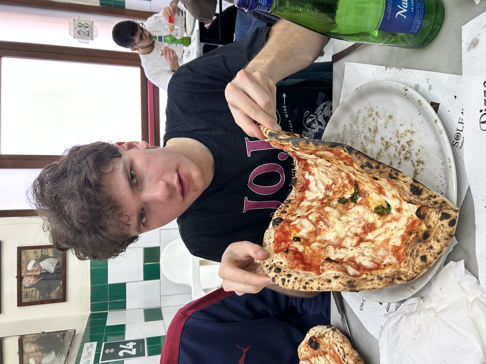
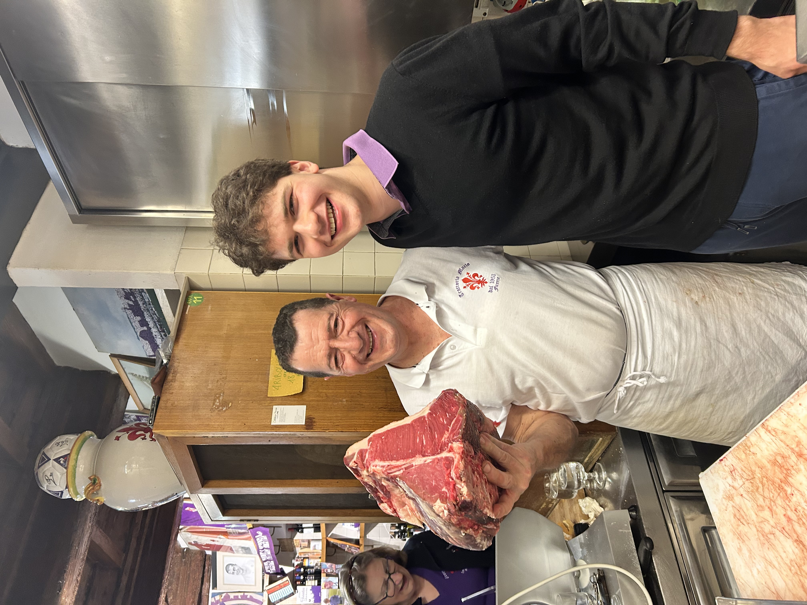
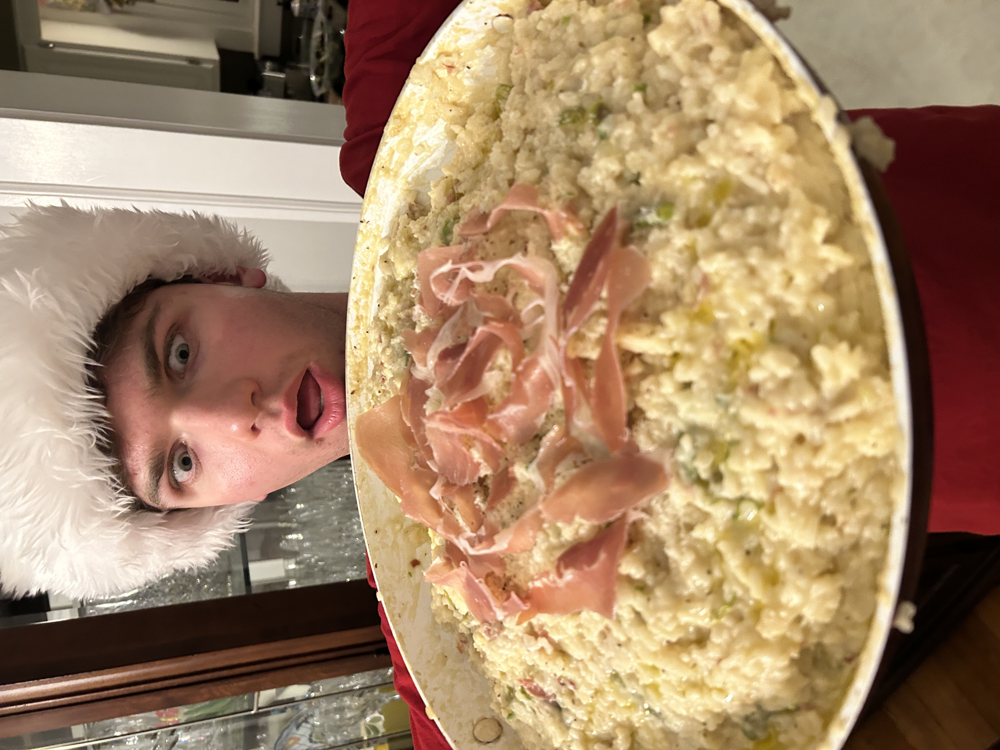

01
Anthony Bourdain



Not literally. But close enough. I spent more hours of my childhood watching other people cook than most people spend eating. I was the kid in the corner who kept asking questions nobody wanted to answer.
Why are you adding that now? How much of that is too much? What does "a pinch" actually mean to you, specifically?
The answers were always the same: "You'll know when it's ready." Or worse: "I don't know, I just do it."
I've spent a long time trying to figure out what they knew that they couldn't say. This site is the result of that.
It was currency. It was memory. It was the thing you brought when words ran out. Someone died — you brought a dish. Someone had a baby — you brought something that could feed twelve. Someone needed forgiving — you showed up with the recipe they'd been asking for for thirty years.
"A recipe is never just a recipe. It's an argument, a gift, a peace offering, an inheritance."
I started cooking seriously in my twenties, the way most people do — badly and alone in a small apartment with one good pan and too much ambition. I made mistakes. I burned things. I oversalted, undercooked, and once, famously, made a soup that still cannot be discussed at family gatherings.
What saved me wasn't a cooking class or a cookbook. It was a phone call to my grandmother where, for the first time, she actually told me. The real amounts. The actual technique. The thing she'd been leaving out for years.
I wrote it all down. I kept writing. And eventually I had something worth sharing.
No Secrets is not a cooking show. It's not aspirational content. There are no perfect kitchens here, no immaculate cutting boards, no recipes that come together in 30 minutes.
What there is: real recipes with real histories. The stories behind them — who made them, what they meant, what was almost lost. Personal notes on what I've changed, what I haven't, and why. And occasionally, my opinions about food, which I have many of and hold firmly.
If you're looking for quick weeknight dinners, there are a thousand other sites. If you want to understand why something works the way it does, and the person who figured it out first, you're in the right place.
to be filled
to be filled
please enjoy my family's recipes
The Goods